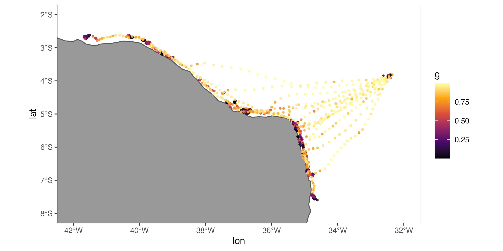
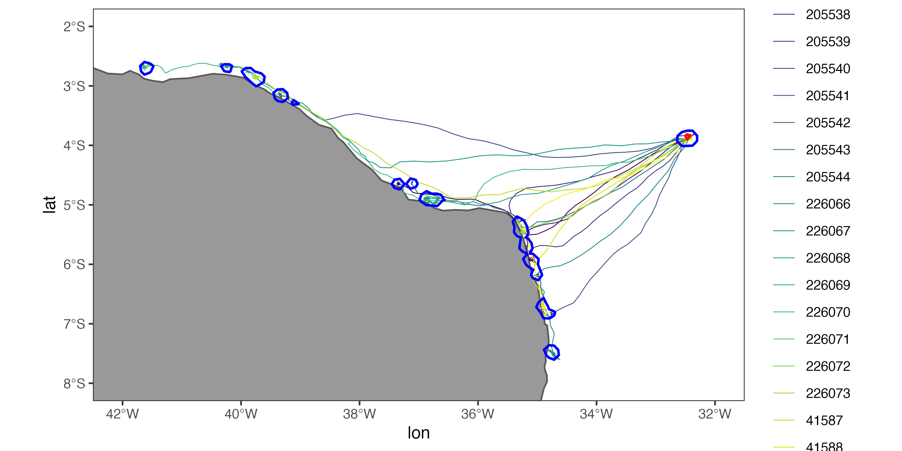
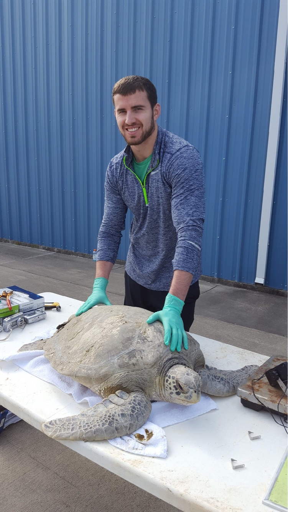

Space-use and behavioral state estimation from animal telemetry data
How to extract more from your animal movement data in R
An NSF-funded workshop by Josh Cullen
📆 September 8 - 9, 2022
⏰ 9:00 am - 5:00 pm
🏫 Florida State University, EOAS 3063
The foieGras package has since been renamed aniMotum since this workshop was held. Any mention of the foieGras package in video recordings or other materials on this website that haven’t been updated should therefore refer to animMotum instead moving forward.
Workshop overview and motivation
The collection, analysis, and inferences made from animals tracked via satellite and acoustic telemetry have become common within the field of animal movement ecology and conservation. With these datasets, researchers and conservation practitioners are often interested in what the tagged animals are doing and where they’re doing it. There are an ever-growing number of tools that can make it difficult to determine which method to use for a particular project goal or dataset. This 2-day workshop will present a set of established methods commonly used to account for location error, estimate unobserved animal behavioral states and space-use, as well as some cutting-edge methods that have recently been developed.

aniMotum package
amt packageAdditionally, a set of guidelines will be presented as to how practitioners should decide which method is best for their project and data needs. The focus of this workshop will be on satellite telemetry data (i.e., GPS, Argos, light-level geolocation) for aquatic species using the R programming language, but is applicable to terrestrial species and some instances of acoustic telemetry.
If you have any questions, please contact me at joshcullen10 [at] gmail.com.
Learning objectives
- Gain experience in exploring many aspects of collected satellite telemetry data
- Learn how to account for location error using state-space models
- Learn how to implement advanced statistical models to estimate behavioral states
- Learn how to implement a variety of methods to estimate space-use
- Understand how to decide among different methods to estimate behavioral states and/or space-use depending on the study objectives and available data
- Gain experience in generating plots to visualize model results and disseminate findings
Who is this workshop aimed at?
- Advanced undergraduate students, graduate students, postdocs, and any other professionals that would like to learn more about the available options for study animal movement ecology
- Intermediate to advanced R users
- Practitioners familiar with animal telemetry data
- Beginner to intermediate GIS users
Instructor

Dr. Josh Cullen is an NSF postdoctoral fellow and quantitative ecologist that is interested in animal movement ecology and integrative organismal biology. He is currently working on a project to develop a transferable species distribution modeling approach that will be applicable across taxa, but uses green turtles (Chelonia mydas) as a focal species. Josh has been involved with a variety of projects related to animal movement ecology from his PhD and previous postdoctoral position, including the investigation of hawksbill turtles (Eretmochelys imbricata) in the Arabian Gulf, endangered Everglade snail kites (Rostrhamus sociabilis plumbeus) in Florida, and giant armadillos (Priodontes maximus) in the Brazilian Pantanal. Josh has also assisted in the development of a set of non-parametric Bayesian models for estimating change points and behavioral states from biotelemetry data, which are available in the bayesmove package in R. Due to his recent comparison of available methods to estimate behavioral states from animal telemetry data (Cullen et al., 2021), Josh is familiar with the benefits and drawbacks of the most commonly available methods. He regularly performs exploratory data analysis, data wrangling, visualization, and GIS operations all using the R programming language and mentors undergraduate and graduate students in applying these skills as part of their research projects.
Preparing for the workshop
Since the workshop will use a wide range of R packages, some of which require a C++ compiler, it will be best for all participants to download and ensure that all necessary software are properly installed before attending the workshop. More details can be found on the Preparing for Workshop page of this website.
This material is based upon work supported by the National Science Foundation under Grant Numbers 2126583 and 1904818. Any opinions, findings, and conclusions or recommendations expressed in this material are those of the author(s) and do not necessarily reflect the views of the National Science Foundation.